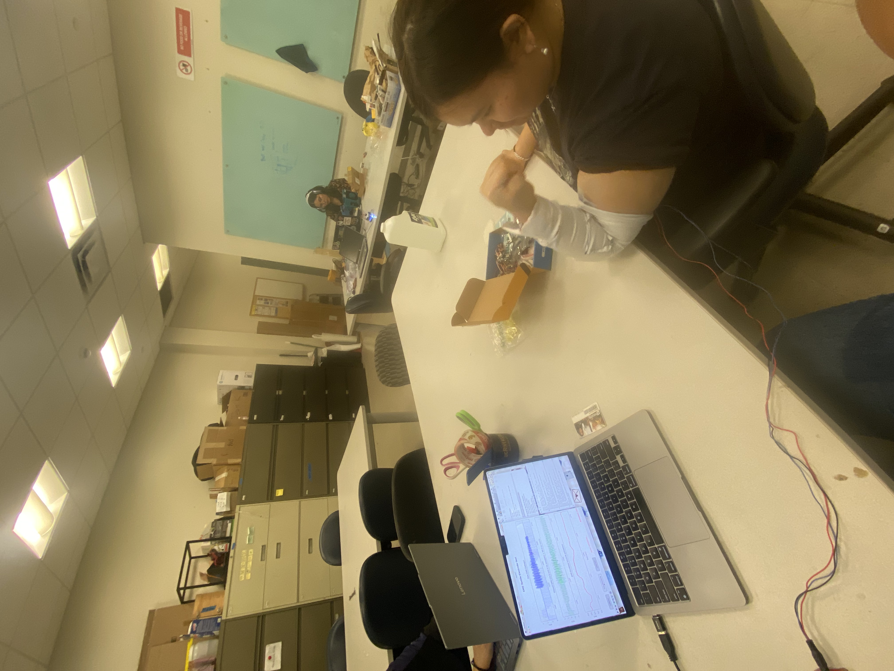
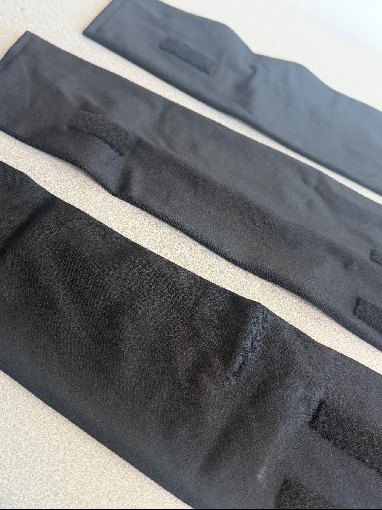
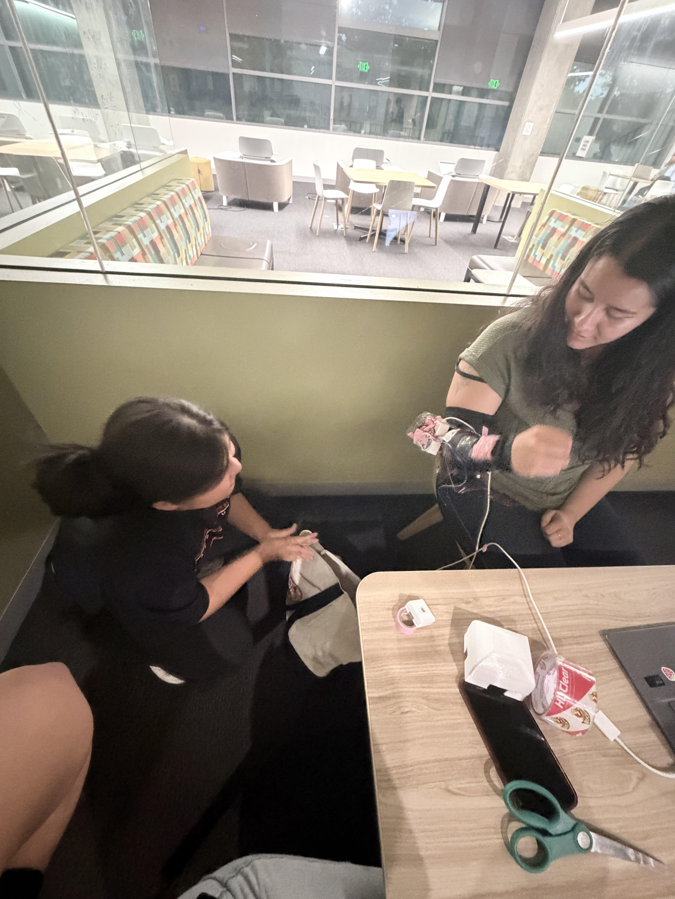
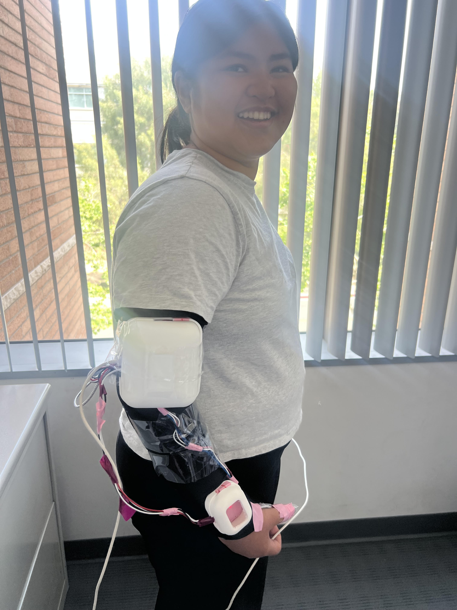
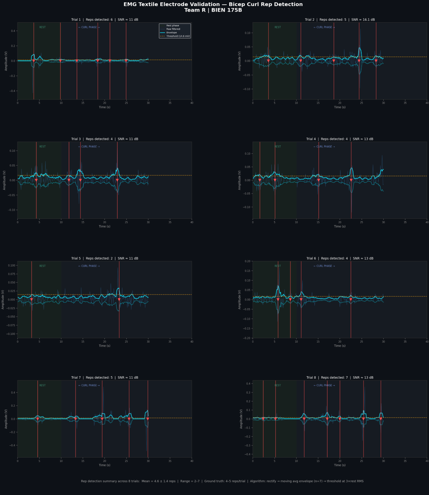
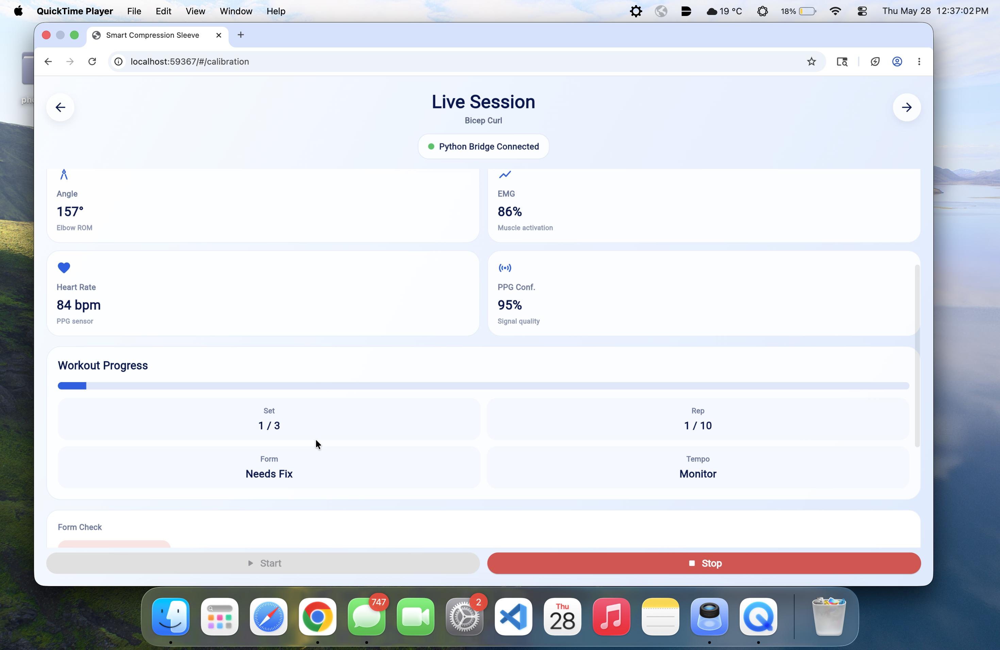
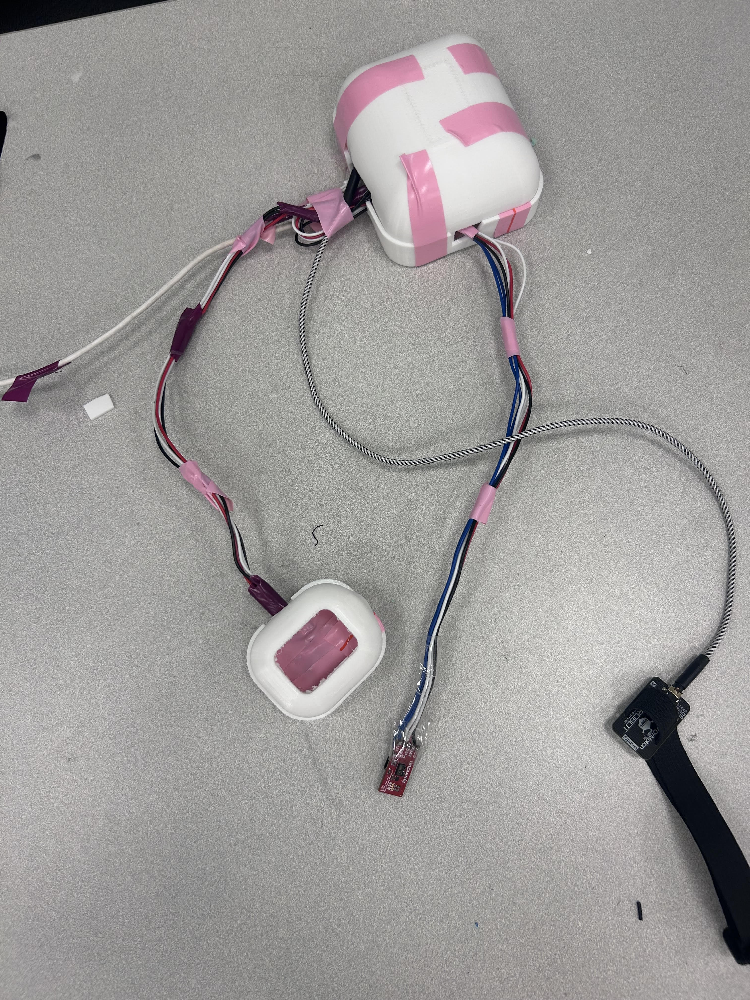
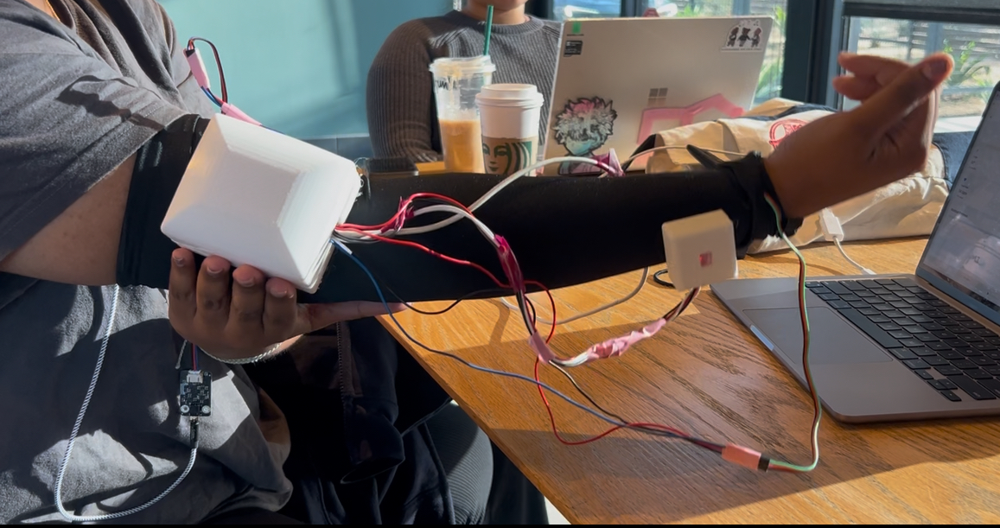

Click through the photos to see the project come together — from the first breadboard sensor test through to a finished, worn device.












1 / 15
Live demo
Watch the sleeve classify form in real time during a bicep curl session.